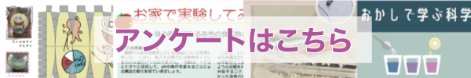

生物コース
生物のイロイロを調査します
― いきもの探偵事務所 ―
いきもの探偵事務所へようこそ！
魚探偵や
花探偵と一緒に
生物の世界を
覗いてみませんか！
このアイコンの右の 動画タイトルをクリックすると YouTube動画が 開きます!
開催期間：2021年 11月 1日（月）～2021年 11月 30日（火）
近日公開予定です。
<-->

サイエンスオープンラボに関する
アンケートはこちらクリック！！！
アンケートにお答えいただくと
ペーパークラフト等の
素敵な
景品が
ダウンロードできます
最終更新日:2021年11月2日
魚探偵！
〜魚の
体色の
不思議を
顕微鏡で
解き
明かします〜
魚の
体の色は
「色素胞」という
細胞でできています。
その色素胞を
顕微鏡で
観察して、
肉眼で
見た
時との
違いや、
色素胞が
体色に
関わる
仕組みを
明らかにします。
対象年齢：
小学生以上
花探偵！
〜花の
染色により
植物の
茎の
構造を
解き
明かします〜
植物は，
根から
水と
養分を
吸収し，
茎や
葉へと
運びます。
茎の
中の
通り
道「
維管束」のはたらきを，
花を
染色することによって
明らかにします。
対象年齢：
小学生以上

２０２０ サイエンス・オープン・ラボ
生物にハマる
おうち時間
- GoTo生物ラボ！-
珍しい動物標本、身近ないきものや変わったいきものたち、生物実験の様子などを
わかりやすく紹介する動画や、楽しく生物の知識を学べるゲームを用意しています！
（下の画像をクリックすると昨年度のサイエンス・オープン・ラボに移動します）